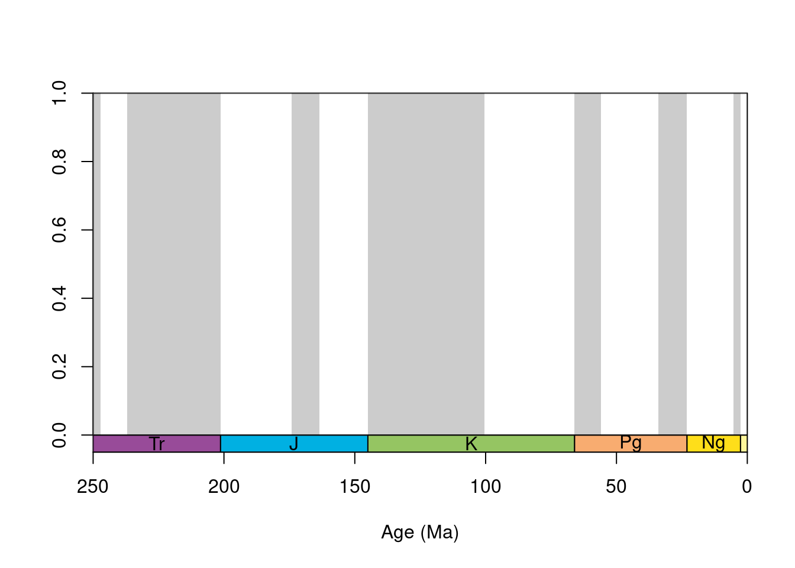
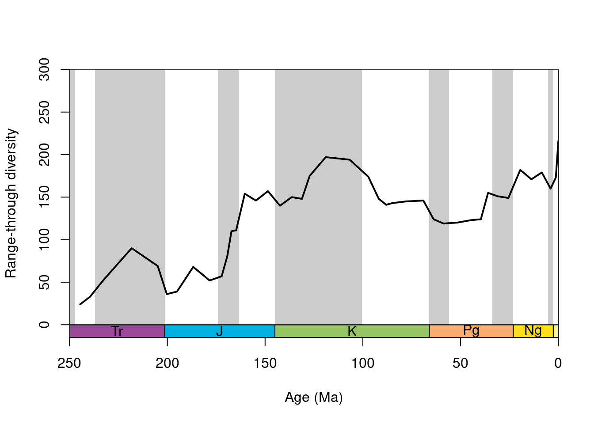
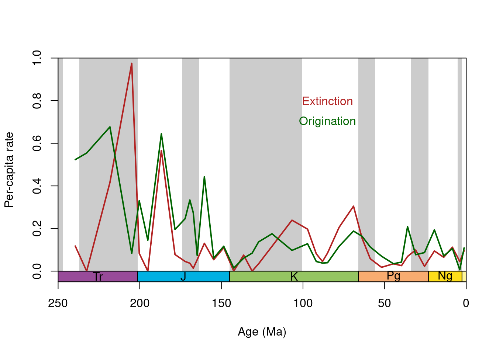

Overview
This tutorial is aimed to introduce the divDyn package and its applications to data from the fossil record. In particular, you will learn how to calculate taxonomic richness, extinction and origination rates from time‐binned fossil data using state‐of‐the‐art methodology. This tutorial requires some familiarity with the R programming environment and fossil data. But solutions will be displayed throughout the tutorial, so even without any background in R or fossil data, you can take away something from this.
The divDyn package

divDyn was created by Ádám Kocsis to ensure traceability, reproducibility and comparability of quantitative palaeobiological studies. To get a basic introduction to the package, please read the abstract of the paper The r package divDyn for quantifying diversity dynamics using fossil sampling data, which accompanies the package. I would even recommend to read the whole paper, as it is a magnificent guide to working with fossil data itself. After reading through the abstract, and skimming through the paper, can you answer the following questions? Note that some questions allow multiple selection.
divDyn basicsbinstat()
After familiarizing ourselves with the package, we are now ready to work with it. We can load the package with the library() call:
library(divDyn)The package itself has a built in dataset corals, which we can load with the data() function:
data(corals)We now have access to around 30,000 coral occurrences from the Paleobiology Database, with a number of other information attached.
str(corals)## 'data.frame': 29775 obs. of 35 variables:
## $ genus : chr "Thamnasteria" "Thecosmilia" "Thamnasteria" "Thecosmilia" ...
## $ collection_no : int 1559 1566 1566 1569 1612 1612 1612 1744 1834 1836 ...
## $ family : chr "Thamnasteriidae" "Montlivaltiidae" "Thamnasteriidae" "Montlivaltiidae" ...
## $ abund_value : chr "" "" "" "" ...
## $ abund_unit : chr "" "" "" "" ...
## $ reference_no : int 41 41 41 41 41 41 41 47 30659 47 ...
## $ life_habit : chr "intermediate-level epifaunal" "intermediate-level epifaunal" "intermediate-level epifaunal" "intermediate-level epifaunal" ...
## $ diet : chr "photosymbiotic" "photosymbiotic" "photosymbiotic" "photosymbiotic" ...
## $ country : chr "United Kingdom" "United Kingdom" "United Kingdom" "United Kingdom" ...
## $ geoplate : int 305 305 305 305 305 305 305 305 315 315 ...
## $ lat : num 50.8 50.8 50.8 50.8 50.6 ...
## $ lng : num -2.28 -2.28 -2.28 -2.28 -2.35 ...
## $ paleolat : num 41.4 41.4 41.4 41.4 41.3 ...
## $ paleolng : num 7.85 7.8 7.8 7.8 7.75 ...
## $ period : chr "Jurassic" "Jurassic" "Jurassic" "Jurassic" ...
## $ epoch : chr "Late/Upper Jurassic" "Late/Upper Jurassic" "Late/Upper Jurassic" "Late/Upper Jurassic" ...
## $ subepoch : chr "" "" "" "" ...
## $ stage : chr "Oxfordian" "Kimmeridgian" "Kimmeridgian" "Kimmeridgian" ...
## $ early_interval: chr "Oxfordian" "Kimmeridgian" "Kimmeridgian" "Kimmeridgian" ...
## $ late_interval : chr "" "" "" "" ...
## $ max_ma : num 164 157 157 157 157 ...
## $ min_ma : num 157 152 152 152 152 ...
## $ stg : num 67 68 68 68 68 68 68 74 75 74 ...
## $ ten : int 34 34 34 34 34 34 34 38 39 38 ...
## $ env : chr "nr" "nr" "nr" "nr" ...
## $ lith : chr "c" "c" "c" "s" ...
## $ latgroup : chr "nt" "nt" "nt" "nt" ...
## $ bath : chr "deep" "deep" "deep" "deep" ...
## $ gensp : chr "Thamnasteria sp." "Thecosmilia annularis" "Thamnasteria sp." "Thecosmilia annularis" ...
## $ ecology : chr "z" "z" "z" "z" ...
## $ ecologyMostZ : chr "z" "z" "z" "z" ...
## $ ecologyMostAZ : chr "z" "z" "z" "z" ...
## $ ecologyBoth : logi FALSE FALSE FALSE FALSE FALSE FALSE ...
## $ growth : chr "colonial" "colonial" "colonial" "colonial" ...
## $ integration : chr "3" "1" "3" "1" ...Note that the package provides a number of functions to clean raw fossil data, but these will not be covered in this tutorial. Instead, you can look at the blogpost written by Àdàm to see how to do this. All these steps are already done on the corals data set. The only thing we will do here is to subset the coral data to the stages 52:95, which correspond to only using post palaeozoic data. There is not much going on with corals before that, so that just makes our calculations easier.
postPaleozoic <- 52:95
corals <- subset(corals, stg %in% postPaleozoic)Now we are ready to run the first function. We can get an overview of sampling parameters by running the binstat() function, that calculates the occurrence, collection, and reference counts in a single line. This is the general use of the high-level function of the package: you state the occurrence data frame as the first, and then the column names as additional arguments. The column tax stands for the taxon names, bin for the discrete time bins, coll for collection identifiers and ref for reference identifiers.
bsFull <- binstat(
x = corals,
tax = "genus",
bin = "stg",
coll = "collection_no",
ref = "reference_no"
)## The database contains duplicate occurrences (multiple species/genus).The code above calculates sampling parameters for the data set corals on genus level using geologic stages from each collection using the respective reference. However, the output is a bit cryptic as it returns a lot of NA’s. The reason for that is that the function calculates a metric for each value in the stage data set which is 1 to 95. However, in some of these stages (mostly palaeozoic), we don’t have any corals. We can modify the output using the same postPaleozoic subsetting vector as above.
bsFull <- bsFull[postPaleozoic,]Now bsFull contains only those metrics for stages 52 to 95. We can check that by printing the data frame.
bsFullNow it’s your turn. Can you change the call so that we calculate the parameters on family level, instead of genus level?
Hint: You might want to look up the column name in the coral data set, that specifies the family names. Just look at the call str(corals) above
bs_fam <- binstat(
x = corals,
tax = "genus",
bin = "stg",
coll = "collection_no",
ref = "reference_no"
)
bs_fam[postPaleozoic,]bs_fam <- binstat(
x = corals,
tax = "family",
bin = "stg",
coll = "collection_no",
ref = "reference_no"
) The output of binstat() is organized such as the index of the values in the vector match up the bin identifier (e.g. the 60th value is for stg 60). The default setting of the function will output a message about duplicate occurrences. This warns us that there are collections with more than one genus entries in a collection (i.e. more than one species/genus). If you are interested in genus-level analyses, it is probably better to count these as one, which you can do with duplicates=FALSE option.
bs <- binstat(
x = corals,
tax = "genus",
bin = "stg",
coll = "collection_no",
ref = "reference_no",
duplicates=FALSE)Cool, we now calculated basic sampling summaries for our data set. We saved the summaries in a matrix called bs, which we will use for plotting in the next exercise.
tsplot()
Plotting these variables is probably better then just looking at the numbers. The package includes a powerful time-scale plotting function that lets you visualize how time is broken down to discrete intervals. But to use it, we first need to load the built-in stage data from divDyn.
data(stages)Now we can use tsplot to create our visualizations. This highly customizable function is built on the basic plot() function, and most of its arguments are inherited. The following function call will draw an empty plot within the past 250 million years, with series-level shading and system-level boxes at the bottom:
tsplot(stages, boxes="sys", boxes.col="systemCol",
shading="series", xlim=c(250, 0))
To get the correct y-axis dimensions, we can look up the maximum occurrence value of the bs data set:
max(bs$occs, na.rm = TRUE)## [1] 5377Then you can draw the number of occurrences with lines(). As the same row indices in the stages object and the result of binstat() indicate values that belong to the same interval, you do not need any subsetting to align our sampling summaries to the stage data. Note that we defined the y-axis limits from 0 to the maximum of occurrences
tsplot(
stages,
boxes = "sys",
boxes.col = "systemCol",
shading = "series",
xlim = c(250, 0),
ylim = c(0, 5600),
ylab = "Number occurrences"
)
lines(stages$mid, bs$occs)So currently the series are shaded (every other series is highlighted in grey). Some people don’t like this look and would prefer no shades (i.e. a cleaner look). Can you find which argument call you have to remove from the tsplot() call.
tsplot(
stages,
boxes = "sys",
boxes.col = "systemCol",
shading = "series",
xlim = c(250, 0),
ylim = c(0, 5600),
ylab = "Number occurrences"
)
lines(stages$mid, bs$occs)tsplot(
stages,
boxes = "sys",
boxes.col = "systemCol",
xlim = c(250, 0),
ylim = c(0, 5600),
ylab = "Number occurrences"
)
lines(stages$mid, bs$occs)Now can you look at the number of collections, instead of occurrences? Note that you need to look at the details in the binstat() description to find which column name refers to the number of collections in each time bin. You can find the description here.
Hint: You should change the y-label as well. And don’t forget to lower the y-limit, as the current limit is probably too high
tsplot(
stages,
boxes = "sys",
boxes.col = "systemCol",
shading = "series",
xlim = c(250, 0),
ylim = c(0, 5600),
ylab = "Number occurrences"
)
lines(stages$mid, bs$occs)tsplot(
stages,
boxes = "sys",
boxes.col = "systemCol",
xlim = c(250, 0),
ylim = c(0, 1200),
ylab = "Number collections"
)
lines(stages$mid, bs$colls)It is not surprising that occurrences and collection numbers have the same overall trajectory. As you can see, the sampling of corals is highly volatile over time, with a couple of marked peaks in the late Triassic, Late Jurassic, mid and Late Creteacoues and the Neogene, that we have to take into consideration in some form, when describing the evolution of the group.
divDyn()
Now that we know how sampling changed over time, we can calculate a lot of diversity, extinction and origination rate series from the dataset with the basic divDyn() function. This function requires an occurrence dataset with a taxon (tax) and a discrete time (bin) columns. Note that we again use only those stages, where we have coral occurrences.
dd <- divDyn(corals, tax="genus", bin="stg")
dd_sub <- subset(dd, stg %in% postPaleozoic)str(dd_sub)## 'data.frame': 44 obs. of 31 variables:
## $ stg : num 52 53 54 55 56 57 58 59 60 61 ...
## $ t2d : num NA NA NA 11 16 39 54 7 8 13 ...
## $ t2u : num NA NA 11 16 39 54 7 8 13 13 ...
## $ t3 : num NA NA NA 8 16 22 6 4 7 7 ...
## $ tPart : num NA NA NA 6 2 0 1 3 6 2 ...
## $ tGFd : num NA NA NA NA 7 3 0 0 9 3 ...
## $ tGFu : num NA NA NA 1 1 0 2 9 1 1 ...
## $ tSing : num NA NA 6 4 6 13 6 2 2 12 ...
## $ tOri : num NA NA 18 11 20 30 2 9 5 19 ...
## $ tExt : num NA NA NA 2 0 16 38 2 0 16 ...
## $ tThrough : num NA NA NA 16 27 31 23 23 32 21 ...
## $ divSIB : num NA NA 24 26 48 85 63 19 18 60 ...
## $ divCSIB : num NA NA NA 36.4 43.2 ...
## $ divRT : num NA NA 24 33 53 90 69 36 39 68 ...
## $ divBC : num NA NA NA 18 27 47 61 25 32 37 ...
## $ extProp : num NA NA 0.25 0.182 0.113 ...
## $ oriProp : num NA NA 1 0.455 0.491 ...
## $ extPC : num NA NA NA 0.118 0 ...
## $ oriPC : num NA NA NA 0.523 0.554 ...
## $ ext3t : num NA NA NA 0.318 0 ...
## $ ori3t : num NA NA NA 0.693 0.891 ...
## $ extC3t : num NA NA NA 0.201 0 ...
## $ oriC3t : num NA NA NA NA 0.331 ...
## $ extGF : num NA NA NA 0.1252 -0.0541 ...
## $ oriGF : num NA NA NA NA 0.495 ...
## $ E2f3 : num NA NA NA 0.118 0 ...
## $ O2f3 : num NA NA NA NA 0.366 ...
## $ ext2f3 : num NA NA NA 0.125 0 ...
## $ ori2f3 : num NA NA NA NA 0.455 ...
## $ samp3t : num NA NA NA 0.571 0.889 ...
## $ sampRange: num NA NA NA 0.562 0.815 ...The output of this function resembles that of the binstat() function. Variables are organized with their names:
- Names starting with t- (e.g. t3) are taxon counts
- Names starting with div- are diversity estimators
- Names starting with ori- and ext- are origination and extinction rate estimators, respectively
- Names starting with samp- are measures of sampling completeness
The abbreviations are resolved in the help file that can be accessed here. This file also includes all equations that are used to calculate the variables.
The most basic way to count richness over time is with range-through diversities (divRT). This is simply just the count of taxa that was supposed to be living in an interval (assuming presence if it was found before and after it, if it is not sampled). You can plot these with:
tsplot(
stages,
boxes = "sys",
boxes.col = "systemCol",
shading = "series",
xlim = c(250, 0),
ylim = c(0, 300),
ylab = "Range-through diversity"
)
lines(stages$mid, dd$divRT, lwd=2)
Note that diversity in the Cretaceous is comparable to those that corals demonstrated in the Neogene.
Now let’s plot the per-capita extinction and origination plot. We can combine them by calling another line().
tsplot(
stages,
boxes = "sys",
boxes.col = "systemCol",
shading = "series",
xlim = c(250, 0),
ylim = c(0, 1),
ylab = "Per-capita rate"
)
lines(stages$mid, dd$extPC, lwd=2, col = "firebrick")
lines(stages$mid, dd$oriPC, lwd=2, col = "darkgreen")
text(85, 0.8, labels = "Extinction", col = "firebrick")
text(85, 0.7, labels = "Origination", col = "darkgreen")
Note that we added a legend using text(). Now it’s time to play around with richness estimates. Select some variables from the function documentation and plot them on your own.
Summary
This tutorial introduced a core subset of functions of the divDyn package. We were able to calculate sampling summaries using divDyn::binstat(). As well, we calculated various diversification metrics using divDyn::divDyn(). We finally plotted both time series data using divDyn::tsplot(). Of cause, the divDyn package provides even more functions that are all crucial when working with fossil data. Until then, you can take an own look into the package and play around with it. We will look into these in an other tutorial. Until then, thank you very much for your attendance and please let us know how you find these tutorials.